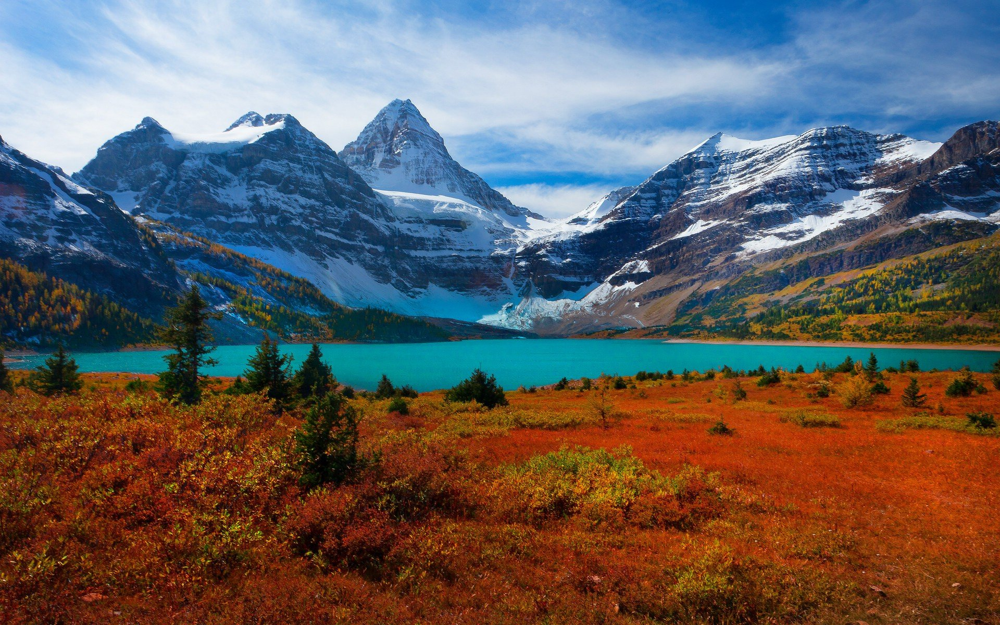

Best Mountain Quotes: 120+ Quotes About The Mountains
There’s nothing quite like an adventure in the mountains, being
surrounded by nature’s giants. The achievement of reaching the summit,
the epic views along the way, the feeling of weightlessness as you ski
down, the sense of awe as you are immersed amongst the wilderness. The
mountains have the ability to conjure up our most primal emotions and
feelings.
It is, therefore, no surprise that life is often compared to the
mountains, with its many ups and downs and challenges. Perhaps this is
why quotes about mountains resonate with so many of us. I know I can
personally relate to many of these mountain quotes!
Whether you’re looking for quotes to inspire your next adventure, some
inspirational and motivational quotes to get you going, or mountain
captions for Instagram, this list of the best mountain quotes has you
covered!

Mountain Climbing in Jammu and Kashmir
The amazing peaks of the Pir Panjal ranges of the Indian Himalayas
provide the best opportunities for mountain climbing in Jammu and
Kashmir. Feel the excitement and adrenaline rush as you climb the
peaks and from the top, get panoramic views of Pakistan and Tibet. The
advantage of mountain climbing in both Jammu Region and Kashmir Valley
is that both amateurs and experts can enjoy it.
It is, therefore, no surprise that life is often compared to the
mountains, with its many ups and downs and challenges. Perhaps this is
why quotes about mountains resonate with so many of us. I know I can
personally relate to many of these mountain quotes!
Whether you’re looking for quotes to inspire your next adventure, some
inspirational and motivational quotes to get you going, or mountain
captions for Instagram, this list of the best mountain quotes has you
covered!

Best Time for Mountain Climbing in Jammu and Kashmir
There are several mountain peaks in Kashmir Valley where mountain
climbing gives you the ultimate rush, thrill and adventure. Two of
these, Sonmarg (5,425 meters) and Harmukh (5,148 meters), are best
suited for amateur mountain climbers.
It is, therefore, no surprise that life is often compared to the
mountains, with its many ups and downs and challenges. Perhaps this is
why quotes about mountains resonate with so many of us. I know I can
personally relate to many of these mountain quotes!
Whether you’re looking for quotes to inspire your next adventure, some
inspirational and motivational quotes to get you going, or mountain
captions for Instagram, this list of the best mountain quotes has you
covered!